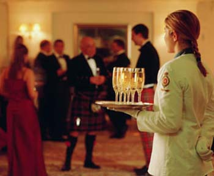

Šampanjaste vesti
- Evo, na primer, jutros sam pre posla naišla na jednu finu bluzu, pa sam je i kupila.
- Onda, vest sa B92, od juče: "Gradska čistoća sakupi pet puta više plastične ambalaže mesečno nego što može da preradi, ali kada bi sistem prikupljanja i reciklaže bio razvijen u celoj Srbiji, država ne bi morala da uvozi sirovine za pravljenje plastike, bilo bi više mesta na deponijama, a manje đubreta po ulicama.Kontejneri za plastičnu ambalažu, postavljeni u četiri beogradske opštine, napune se za jedan dan. U reciklažnom dvorištu Gradske čistoće čeka se presa većeg kapaciteta jer postojećih pet ne može da ispresuje 25 tona plastike prikupljene po gradu."
- Takođe, odnos sunčeve svetlosti i temperature vazduha ovih dana je apsolutno idealan. Prvog ima puno, a drugo je umereno.
- Jučerašnja vest iz novosadskog Dnevnika može se raznoliko interpretirati. A glasi ovako: "Od 2002. do 2004. godine u Srbiji je osnovano više od 10.000 kompanija, a istovremeno je zatvoreno gotovo 8.500. Najviše kompanija osnovano je u sektoru veleprodaja i trgovina, čak preko 3.000. Sledi proizvodnja, sa oko 1.700 kompanija, zatim ostale poslovne aktivnosti, sa 900 novoosnovanih preduzeća, pa građevina sa 669, poljoprivreda sa 615, maloprodaja i trgovina sa 548. U sektoru obrazovanja otvoreno je za ove dve godine čak 526 firmi, dok je u sektoru hotelijerstva i restorana samo 140 novih, a u oblasti nekretnina 43. Interesantno je da je u ovom periodu otvoreno i čak sedam kompanija u vazdušnom transportu i tri u vodenom."
- A vest vezana za YAHTI stigla je juče, mailom.
"Dear Colleagues
For the 20th edition of Prix Europa this year 44 entries were received from 17 countries were entered for the Internet category. Of course we were very pleased about this and are thankful to all entrants for their interest. The three public competition days in this category only allows time for 20 projects. The selection of these 20 projects has not been easy, and we have had to turn down very interesting programmes.
For this reason, we are pleased that the project
Yahti
will be introduced in the competition of PRIX EUROPA 2006."
Rezultati će se znati u oktobru.
Komentari
Hvala Majo. Ta kategorija je 'Internet', a druge dve su televizija i radio
La Lara | 24.08.06 10:00
I mene je obradovala ta vest o reciklaži ambalaže! Još jedan koračić napred, yeah. Drugi obrad je povodom ovog ulaska u užu konkurenciju! U to ime: pozdravi i čestitke!
siboney | 24.08.06 13:37
jupi jupi jeee
redsandra | 24.08.06 15:21
Bravo!
al-Harvardi | 24.08.06 18:00
Woo-hoo!!
Jada iz Eleja | 25.08.06 07:12
cestitam, je l` to znaci da cete ici da predstavite program, u berlin?
tekton | 25.08.06 07:58
Čestitke! Jel' to samo za dizajn ili za celu Yahti-ideju?
 ubipacijentic | 25.08.06 21:54
ubipacijentic | 25.08.06 21:54
Sjajne vesti! Od svih onih nabrojanih, ova poslednja je the best! Srecno, sta drugo reci.
vajarka | 25.08.06 22:50
Ovo je za sve aspekte, od dizajna do ideje i predstavljanja
La Lara | 29.08.06 13:11
Pridružujem se čestitkama. Drago mi je da sam naišla na ovaj sajt!
 Seesaw | 08.09.06 21:25
Seesaw | 08.09.06 21:25
 RSS feed
RSS feed
 sadržaji se objavljuju pod
sadržaji se objavljuju pod
SJAJNO :)) cestitam :)) Nego, samo sam zvirnula na Prix sajt ali ne nadjoh nista o blogovima?! U kojoj konkurenciji se vi takmicite?